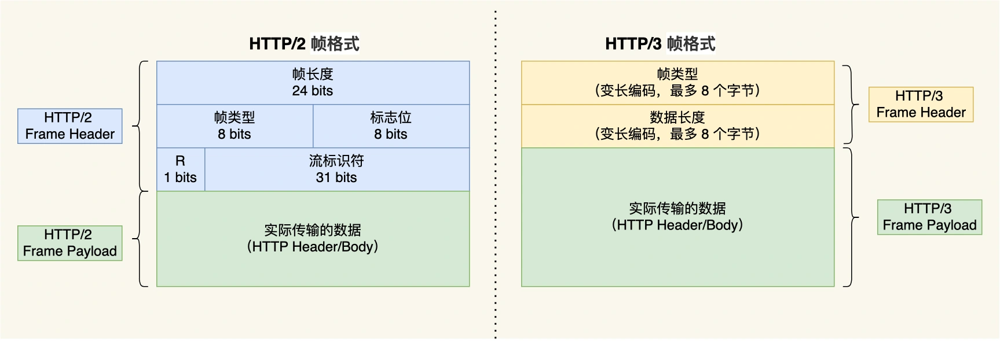

1 HTTP基本概念
1.1 HTTP介绍
HTTP（HyperText Transfer Protocol）是超文本传输协议。
- 协议：两个及以上参与者对一种行为的约定和规范。计算机世界里尤其是网络世界里协议无处不在，HTTP就是其中一种专门用来在两点之间交流通信、传输数据的约定和规范。
- 传输：一堆东西从A位置挪到B位置，或从B位置挪到A位置。这代表HTTP是一个双向协议，客户端可以通过HTTP发送请求给服务器端，服务器端也可以通过HTTP发送响应给客户端。
- 超文本：文本是简单的字符或经过处理的图片、视频、压缩包。超文本是这些文本的混合体，还包括超链接功能，能从一个超文本跳跃到另一个超文本，HTML就是一种常见的超文本。HTTP传输的内容就是超文本。
1.2 HTTP报文格式
1.3 HTTP常见的状态码

1.3.1 状态码1xx
提示信息，是协议处理中的一种中间状态，实际用到的比较少。
1.3.2 状态码2xx
表示服务器成功处理了客户端的请求，也是我们最愿意看到的状态。
200 OK：最常见的成功状态码，表示一切正常。只要是非HEAD请求（HEAD请求表示只请求页面首部），服务器返回的响应都有会有响应体数据。204 No Content：也很常见，与200基本相同，区别是204没有响应体，使用场景可以是”save and continue editing” functionality。206 Partial Content：表示响应体的数据并不是资源的全部，只是其中的一部分，常用来做HTTP分块下载或断点续传。
1.3.3 状态码3xx
这一类状态码表示请求的资源发生了变动，需要客户端用新的URL重新发送请求获取资源，也就是重定向。
301 Moved Permanently：永久重定向，说明请求的资源已经不在了，需要改用新的URL重新发送请求获取资源。302 Found：临时重定向。说明请求的资源还在，只是这一次请求暂时用另一个URL来访问。
301和302都会在响应报文的响应头中使用Location字段，指明后续要重定向到的URL，浏览器就能自动跳转到新的请求URL。
304 Not Modified：不具备跳转的含义，表示资源未修改，也称缓存重定向，也就是告诉客户端可以继续使用缓存资源，用于缓存控制。
1.3.4 状态码4xx
经常会看到的错误状态码，表示客户端请求报文有误，服务器无法处理。
400 Bad Request：客户端请求的报文有错误，但只是个笼统的没具体分类的错误。403 Forbidden：请求没出错，但是服务器端禁止访问该资源。404 Not Found：特别常见，表示请求的资源在服务器上找不到或不存在，所以无法提供给客户端。
1.3.5 状态码5xx
也是错误状态码，表示客户端请求报文没有问题，是服务器内部处理时发生了错误。
500 Internal Server Error：类似于400，是个笼统的通用的错误码，没法知道服务器具体发生啥错误。501 Not Implemented：客户端请求的功能暂时还不被支持。502 Bad Gateway：通常是服务器作为网关服务器或代理服务器时返回的错误码。表示服务器自身工作正常，但是后端服务器发生了错误。503 Service Unavailable：服务器当前很忙，暂时无法响应。
1.4 HTTP请求头和响应头的常见字段
1.4.1 请求头字段
Host: www.A.comHost字段：不同的域名通过A记录或者CNAME方式可以连接都同一个IP下，同一个IP也可以设置多个不同站点，因此当我们访问不同的域名时实际上可能被转发到同一IP，怎么区分这些不同的站点呢？就是用的Host字段，Host字段被用来在客户端请求报文中指定服务器的域名，从而可以把请求发往同一台服务器（同一IP地址）上的不同网站。
Connection: keep-aliveConnection字段：最常用于客户端请求报文要求服务器使用TCP持久连接，以便其他请求复用同一个连接。HTTP/1.1 版本的默认连接都是持久连接，但为了兼容老版本的 HTTP，需要指定该首部字段的值为Keep-Alive。
Accept: */*Accept字段：表示客户端可以接收的响应数据格式，上面字段值表示客户端接收任何格式的数据。
1.4.2 响应头字段
Content-Length: 1000Content-Length字段：用于服务器响应报文中标明此次响应的数据长度。
Content-Type: text/html; charset=utf-8Content-Type字段：服务器响应时告诉客户端本次响应数据的格式，客户端可以接收的格式见上文Accept。
Content-Encoding: gzipContent-Encoding字段：说明数据的压缩方式。客户端可以接受的压缩方式由请求报文的Accept-Encoding指定。
2 GET与POST
2.1 GET与POST简介
GET在RFC规范中的定义是从服务器获取指定的资源，这给资源可以是文本、页面、音视频等。GET的请求参数直接以Query String的形式拼接在URL后面。URL规定只支持ASCII，所以GET的请求参数也只能是ASCII字符，HTTP本身对URL长度没有规定，但是浏览器会限制，所以GET的请求参数大小是有限的。
POST在RFC规范中的定义是根据Request Payload即请求负荷对指定的资源做出处理，具体的处理方式根据资源的不同而变化。POST的请求参数写在请求报文体中，数据格式可以任意，只要客户端与服务器端协商好就行，而且浏览器也不会对报文体的大小做限制，即POST的请求参数大小没有限制。
2.2 GET与POST的安全和幂等
安全指请求方法不会破坏服务器上的资源，幂等表示多次执行同样的操作，得到的结果也都是相同的。
从RFC的语义定义上分析：
- GET方法是安全且幂等的。它是只读的操作，在服务器端不发生改变的情况下，无论操作多少次，服务器上的数据都是安全的，得到的响应结果也都是相同的。所以可以对GET请求的数据做缓存，这个缓存可以做到浏览器本身上（彻底避免浏览器发送请求），也可以做到代理服务器上（比如Nginx），GET请求在浏览器中也可以被保存为书签。
- POST方法不安全且不幂等。POST是新增或提交数据的操作，会修改服务器上的资源，所以是不安全的，多次提交数据就会多次修改或创建资源，所以也是不幂等的。所以浏览器一般不会对POST请求做缓存，也不能把POST请求保存为书签。
实际开发过程中，开发者不一定会按照RFC规范定义来实现GET和POST方法，比如可以用GET来实现增删，POST实现查询等。
3 HTTP缓存技术
一些HTTP请求是有重复性的，如果每次请求得到的数据都是一样的，我们可以把这对请求-响应的数据都缓存在本地，下一次需要的时候直接读取本地数据，不必再通过网络请求服务器了，这使得HTTP/1.1的性能肉眼可见的提升。
通过缓存技术可以避免发送HTTP请求，HTTP设计者在很早就考虑到缓存的应用所以设计了不少针对缓存字段在HTTP协议的头部。具体来说，HTTP缓存的实现方式有两种：强制缓存和协商缓存。
3.1 强制缓存
强制缓存指的是决定是否使用缓存的主动性在浏览器这边，只要浏览器判断缓存没有过期，则直接使用浏览器的本地缓存。

上图中返回200成功的状态码，标识了from disk cache，意思就是使用了强制缓存。
强制缓存的实现依靠的是HTTP Response Header的两个字段实现，它们都表示资源在客户端缓存的有效期：
Cache-Control：相对时间。Expires：绝对时间。
如果响应头中两个字段都存在的话，Cache-Control的优先级更高。Cache-Control的选项也更多，设置可以更加精细，推荐使用它来实现强制缓存，具体流程是：
- 浏览器第一次请求访问服务器资源时，服务器在返回这个资源的同时，在响应头中加上
Cache-Control字段，并为这个字段设置值为过期时间大小。 - 浏览器再次请求同一资源时，会先通过请求资源的时间与
Cache-Control中设置的过期时间大小来计算出该资源是否过期，如果没有直接使用缓存，过期才重新请求服务器。 - 服务器收到再次请求后，更新响应头的
Cache-Control字段值。
3.2 协商缓存
协商缓存指的是决定是否使用缓存的主动权在服务器这边，上文提到的状态码304就是服务器在告诉客户端浏览器可以使用本地缓存资源。所以协商缓存就是浏览器与服务器端协商过后，通过协商结果来判断是否使用本地缓存。

协商缓存可以基于两种头部实现：
- Request Header里的
If-Modified-Since字段和Response Header里的Last-Modified字段，二者的值都是GMT格式的时间字符串：- 浏览器第一次请求服务器资源时，响应头中带上
Last-Modified字段，标识这个资源在服务器端的最后修改时间。 - 浏览器收到响应后将资源换存在本地，下一次请求时在请求头中带上
If-Modified-Since字段，这个字段值就是之前得到的Last-Modified字段值，询问服务器这个资源是否已经被修改更新了。 - 浏览器收到请求后通过比较
If-Modified-Since字段值和被请求资源在服务器上的最后修改时间判断是否需要重新响应资源。如果该资源没有被修改服务器会直接返回304 Not Modified，不会带上资源内容，也不会添加Last-Modified字段；如果资源更新了，就正常响应资源200 OK，并带上新的Last-Modified。
- 浏览器第一次请求服务器资源时，响应头中带上
- Request Header里的
If-None-Match字段和Response Header里的ETag字段，二者的值是由服务器为每一个资源生成的唯一标识串，只要资源发生改变，这个标识串也会发生改变：- 浏览器第一次请求服务器资源时，服务器可以通过文件本身计算出一个Hash并在响应头添加
ETag字段把这个标识串返回给浏览器。 - 浏览器再次请求该资源时会在请求头带上
If-None-Match字段，这个值就是之前收到响应中的ETag字段，服务器收到后通过比较两者是否一致来判定文件内容是否被改变。 - 与
Last-Modified不一样的是，当服务器返回304 Not Modified的响应时，由于在服务器上ETag重新计算过，response header中还会把这个 ETag 返回，即使这个 ETag 跟之前的没有变化。
- 浏览器第一次请求服务器资源时，服务器可以通过文件本身计算出一个Hash并在响应头添加
HTTP/1.1中ETag的出现主要是为了解决几个Last-Modified比较难解决的问题：
- 一些文件也许会周期性的更改，但是内容并不改变(仅仅改变的修改时间)，这个时候使用
ETag可以避免重新响应资源内容。 - 某些文件修改非常频繁，比如在秒以下的时间内进行修改，比如1s内修改N次，
If-Modified-Since能检查到的粒度是秒级的，这时就不够用了，但是Etag就能够保证这种需求下客户端在1秒内能刷新N次Cache。 - 某些服务器不能精确的得到文件的最后修改时间。
因此如果两个字段同时存在，ETag的优先级比If-Modified-Since要高。优先级的顺序如下：
Cache-Control > Expires > ETag > Last-Modified
3.3 缓存实现的流程
注意：协商缓存的字段都要配合强制缓存中的Cache-Control来使用，只有在未能命中强制缓存时才会发起带有协商缓存字段的请求。
4 HTTP特性
4.1 HTTP/1.1的优点
HTTP（这里指1.1版本）最凸出的优点是简单、灵活和易于扩展、应用广泛和跨平台。
- 简单：HTTP的基本报文格式就是Header + Body的形式，Header的格式是Key-Value键值对的简单文本形式，易于理解。
- 灵活和易于扩展：HTTP协议里的请求方法、URL/URI、状态码、头字段等组成要求都不是固定似的，允许开发人员自定义扩充。HTTP工作在应用层，它的下层可以随意变化，比如HTTPS就是在HTTP和TCP之间增加了SSL/TLS安全传输层，HTTP/3甚至把TCP替换成了基于UDP的QUIC。
- 应用广泛和跨平台：HTTP的应用范围随着互联网的发展不断变化，从PC的浏览器到手机上各种APP，应用遍地开花，同时天然具有跨平台的优点。
4.2 HTTP/1.1的缺点
HTTP协议的所谓的缺点有的其实是双刃剑，如无状态、明文传输，同时还有一大缺点：不安全！
- 无状态：
优点：服务器不会去记忆HTTP的状态，不需要额外的资源来记录状态信息，这能减轻服务器的负担，从而把更多的CPU和内存等资源用来对外提供服务。
缺点：服务器没有记忆会使得在完成关联操作时非常麻烦。
- 例如登陆 -> 添加购物车 -> 下单 -> 结算 -> 支付，这一系列操作都基于同一个用户的身份，但是服务器不知道这些请求是关联操纵，每一次都要询问确认一遍用户的身份信息。
对于无状态的问题，解决方案很多，比较简单的方式是使用Cookie技术。
Cookie通过在请求和响应报文中写入Cookie信息来控制客户端的状态，这样客户端第一次请求被服务器下发Cookie后，后续请求再带上这个Cookie就能被服务器识别了。
- 明文传输：
明文的意思是传输过程中HTTP携带的所有信息都能被阅读到，比如浏览器的控制台和Wireshark抓包后都可以直接肉眼查看，方便了调试，但同时也让HTTP的所有信息都暴露咋光天化日之下，毫无安全和隐私可言。
- 不安全：
HTTP的严重缺电就是不安全问题，主要有：
- 通信使用不加密明文传输，内容很容易被窃听，比如账号信息泄漏。
- 无法验证报文的完整性，判断不了是否被篡改，比如网页上植入垃圾广告。
- 不验证通信方的身份，有可能遭遇冒充，比如访问假的淘宝。
HTTP不安全的问题将通过HTTPS的方式来解决。
4.3 HTTP/1.1的性能
HTTP协议基于TCP/IP协议栈，使用了Request - Response通信模式，评价其性能关键就基于这两点。
- 长连接（Keep-Alive）：
早起HTTP/1.0性能的一大问题在于每次发器一个请求，都要重新建立一次TCP连接（三次握手），而且是串行请求，这种短连接形式做了无谓的TCP连接建立和断开，增加了通信开销。
HTTP/1.1提出了长连接（持久连接）通信方式，这种方式减少了TCP连接的重复建立和断开的额外开销，减轻了服务器负载。
持久连接的特点是，只要任意一端没有明确提出断开连接，则一直保持TCP连接状态。此外如果某个HTTP长连接在一定时间内和服务器没有任何数据交互，服务器也会主动断开这个连接。

HTTP/1.0中也有长连接，但是默认关闭，要打开需要在请求包头中添加Connection: Keep-Alive，服务端接收到后做出的响应报文中也会添加同样的字段，这样就能打开长连接功能了。
从HTTP/1.1开始，Keep-Alive是被默认开启的，如果要关闭该功能可以在HTTP请求头添加Connection: close。
为了避免没有传输数据的长连接存在浪费资源，Web浏览器一般会提供keepalive_timeout参数用来指定HTTP长连接的超时时间，定时器会在超时后触发回调函数来释放该连接。
- 管道网络传输：
HTTP/1.1的长连接方式使得管道（Pipeline）网络传输成为可能，即在一个TCP连接里面，客户端可以发起多个请求，而不必等一个请求收到响应再发送下一个，减少整体的响应时间。
但是服务器必须要按照接收请求的顺序来对这些管道化请求做响应。这就导致如果处理某一个请求耗时比较长，在它后面的请求都会在服务器端被阻塞，也就是队头阻塞。
- 队头阻塞
Request - Response的通信模式加剧了HTTP的性能问题，HTTP/1.1管道解决了请求的队头阻塞，但是没有解决响应的队头阻塞。
5 HTTPS
5.1 HTTP与HTTPS的区别
- HTTP信息是明文传输，存在严重的安全问题，HTTPS是为了解决HTTP的安全问题而提出的，在HTTP和TCP之间加入了SSL/TLS安全协议，使得报文能够加密传输，
- HTTP连接建立相对简单，TCP三次握手建立连接后就直接进行HTTP请求和响应的报文传输，而HTTPS在TCP三次握手建立连接后还要加入SSL/TLS的握手过程，然后进行加密报文的传输。
- HTTP的端口号是80，HTTPS是443。
- HTTPS需要向CA（Certificate Authority）即证书权威机构申请数字证书，来保证服务器的身份是可信的。
5.2 HTTPS解决了HTTP哪些问题
上文提过，HTTP的明文传输、不验证通信方、无法验证报文完整性带来的安全问题主要有：
- 窃听风险
- 篡改风险
- 冒充风险
HTTPS通过引入SSL/TLS协议，SSL (Secure Sockets Layer) 和TLS（Transport Layer Security）是安全协议的不同版本，SSL是TLS的前身，SSL/TLS协议使用以下手段分别解决了上述三个问题：
- 信息加密：混合加密的方式实现信息的机密性。
- 校验机制：摘要算法为数据生成独一无二的指纹校验完整性。
- 身份证书：服务器的公钥放入到数字证书中。
- 混合加密：
HTTPS采用的是对称加密和非对称加密结合的混合加密方式。
- 通信建立过程中采用非对称加密的方式交换会话密钥，后续不再使用非对称加密。
- 通信过程中全部使用对称加密的会话密钥方式加密明文数据。
之所以采用混合加密是因为：
- 对称加密只使用一个密钥，运算速度快，密钥必须保密，无法做到安全的密钥交换。
- 非对称加密使用公钥和私钥，公钥可以任意分发而私钥保密，解决了密钥交换问题，但是速度比较慢。
- 摘要算法：
客户端在发送明文之前会通过摘要算法算出明文的指纹，发送的时候把指纹+明文一同加密成密文发送给服务器，服务器解密后，用相同的摘要算法算出发送过来的明文，通过比较客户端携带的指纹和当前算出的指纹做比较，若指纹相同，则说明数据是完整的。
- 数字证书：
客户端先向服务器索要公钥，用公钥加密信息，服务器收到秘文后，用自己的私钥解密。这个过程的问题在于，如何保证服务器的公钥没有被篡改且可信呢？
这需要借助于第三方权威机构CA，将服务器公钥放在由CA颁发的数字证书中，只要证书是可信的，公钥就是可信的。通过数字证书的方式保证公钥的身份，从而避免冒充风险。
5.3 HTTPS使用RSA建立连接
HTTPS是应用层协议，首先需要完成TCP的连接建立，然后就是SSL/TLS的建立过程，也就是TLS握手阶段，涉及四次通信，也就是2个RTT。
SSL/TLS协议基本流程是：
- 客户端向服务器索要并验证服务器的公钥。
- 双方协商产生会话密钥。
- 双方都采用会话密钥进行加密通信。
考虑到性能问题，在传输数据的阶段双方加密信息使用的是对称加密，对称加密密钥不能被泄漏，即使数据信息被窃取，因为没有对称加密密钥，信息也无法被解密。但是接收方却需要对称加密密钥来解密，如何保证对称加密的密钥能安全传送给接收方呢？这个过程使用非对称加密的方式来保护对密钥的协商，具体工作就由密钥交换（或协商）算法完成。
事实上，不同的密钥交换算法，TLS握手过程会有一些区别。
5.3.1 RSA握手过程
传统的TLS握手使用的是RSA密钥协商算法来实现密钥交换。TLS证书部署在服务器端时，证书文件包含一对公私钥，公钥会在TLS握手阶段传递给客户端，私钥则一直保留在服务器端，一定要确保私钥不被窃取。
在RSA密钥协商算法中，客户端生成随机密钥，使用服务器端的公钥加密后，传输回服务器，根据非对称加密算法的要求，公钥加密的消息只能通过对应的私钥解密，服务器端解密后，双方就得到了相同的密钥，再用这个密钥加密之后要互相传递的消息。详细过程如下：

- TLS第一次握手
首先，客户端向服务器发起加密通信请求，也就是ClientHello：
- 客户端支持的SSL/TLS协议
Version，如TLS 1.2版本。 - 客户端产生的随机数
Client Random，后续将用于生成会话密钥。 - 客户端支持的密码套件列表
Cipher Suites，如RSA加密算法等。
- TLS第二次握手
服务器收到客户端请求后，向客户端发出响应，也就是ServerHello：
- 确认是否支持SSL/TLS协议
Version，如果浏览器不支持，加密通信将被关闭。 - 服务器产生的随机数
Server Random，后续将用于生成会话密钥。 - 确认要使用的密码套件
Cipher Suite，如TLS_RSA_WITH_AES_128_GCM_SHA256，表示握手时的密钥交换算法使用RSA，证书验证的签名算法使用RSA（因为WITH前只有一个字段），握手后使用AES对称加密算法，密钥长度128位，分组模式GCM，用于消息认证和产生随机数的摘要算法使用SHA256。
然后服务器端为了证明自己的身份，发送消息Certificate：
- 服务器的数字证书信息
Certificates。
再之后服务器端发送消息Server Hello Done，表示我该给你的给完了，本次打招呼完毕。
- TLS第三次握手
客户端收到响应后，首先通过浏览器或操作系统中的CA公钥，确认服务器的数字证书的真实性。
如果证书没问题，客户端从数字证书中取出服务器的公钥，发送消息Client Key Exchange：
- 客户端再次产生的一个随机数
Pre-Master Secret，并使用服务器端提供的RSA公钥加密该随机数。服务端收到后，用自己的RSA私钥解密也得到该随机数。
自此服务器和客户端有了三个随机数：Client Random、Server Random、Pre-Master Secret，接着就用双方协商的加密算法，生成主密钥Master Secret，本次通信的会话秘钥Session Key就由Master Secret生成，会话密钥是对称加密密钥，用于对后续的HTTP请求和响应的数据加密解密。
生成完会话密钥后，客户端发送消息Change Cipher Spec：
- 加密通信算法改变的通知，表示随后的信息都将用会话密钥加密通信。
再然后，客户端发送消息Encrypted Handshake Message：
- 客户端握手结束的通知，表示客户端的握手阶段已经结束，同时把之前所有内容发生的数据做摘要，再用会话密钥加密一下，用来供服务器端校验，验证加密通信是否可用以及之前。
- TLS第四次握手
服务器端的操作也是一样，发送Change Cipher Spec和Encrypted Handshake Message，如果双方加密解密都没问题，握手就正式完成。
5.3.2 RSA算法的缺陷
使用RSA密钥协商算法的最大问题是不支持前向保密。
正如前文所说，服务器端有一对公私钥，随机数Pre-Master Secret在客户端用公钥加密，回到服务器端被私钥解密，这个过程的安全基于的前提是服务器端的私钥没有被泄漏，而如果服务器端的私钥被泄漏，第三方便可以生成同样的Master Secret和会话密钥，之前被截获的所有消息密文就都能被破解了。
5.4 HTTPS使用ECDHE建立连接
5.4.1 DH算法和DHE算法
DH算法（Diffie–Hellman key exchange）是一种非对称加密算法，可以用于密钥交换，该算法的核心思想是离散对数：

底数a和模数p是离散对数的公共参数，也就是公开的，b是真数，i是对数，知道i可以轻易求b，但是知道b却很难推算出i，尤其是当p是一个很大的质数的时候。
DH算法的过程：
- 首先确定使用的公共参数：底数G，模数P；
- 客户端和服务器端分别生成一个随机整数a和b作为各自的私钥；
- 客户端的公钥为：A = G ^ a ( mod P )，服务器端的公钥为：B = G ^ b ( mod P )；
- 双方交换各自的公钥，客户端得到B，服务器端得到A；
- 客户端执行运算B ^ a ( mod P )，服务器端执行运算A ^ b ( mod P )，根据幂运算的规律显然两个结果相等，记为K；
- K就是生成的对称加密密钥，作为后续的会话密钥使用。
因为离散对数的运算规律双方的私钥a和b很难被获取，因此DH密钥交换算法是安全的。
根据私钥的生成方式，DH算法有两种实现：
- static DH算法（已废弃）：一方的私钥是静态的，通常是服务器端，只有客户端的私钥随机生成，黑客截获海量的密钥协商过程然后暴力破解是可能获取服务器的私钥的，然后就能计算出会话密钥了，之前的加密数据都都能被破解，所以static DH算法也不具备前向安全性。
- DHE算法（常用）：双方的私钥在每次密钥交换时都随机生成，E就代表ephemeral，即使黑客破解了一次通信的私钥，其他通信过程依然是安全，这样就保证了前向安全。
5.4.2 ECDHE算法
DHE算法因为要做大量乘法存在计算性能问题，所以现在最广泛应用的密钥交换算法ECDHE算法被提出。ECDHE算法在DHE算法的基础上使用了ECC椭圆曲线的特性，可以用更少的计算量计算出公钥以及最终的会话密钥。
ECDHE算法的过程：
- 客户端和服务器协商确定好使用哪种椭圆曲线，和曲线上的基点G，这两个参数都是公开的；
- 双方针对此次通信随机生成自己的私钥d1和d2；
- 双方计算出自己的公钥，Q1 = d1 * G，Q2 = d2 * G；
- 双方交换各自的公钥；
- 客户端计算点(x1, y1) = d1 * Q2，服务器计算点(x2, y2) = d2 * Q1，很明显计算结果的x1和x2是相同的，这个结果就是生成的会话密钥。
5.4.3 ECDHE握手过程
- TLS第一次握手
客户端发送消息Client Hello：
- 客户端使用的TLS
Version。 - 生成的随机数
Client Random。 - 支持的密码套件列表
Cipher Suites。
- TLS第二次握手
服务器端收到客户端打招呼后，也发送消息Server Hello：
- 确认TLS
Version。 - 生成的随机数
Server Random。 - 选择使用的密码套件
Cipher Suite，比如TLS_ECDHE_RSA_WITH_AES_256_GCM_SHA384，表示密钥协商算法使用ECDHE，签名算法使用RSA，握手后使用对成加密算法AES，密钥长度256位，分组模式GCM，摘要算法使用SHA384。
然后服务器端为了证明自己的身份，发送消息Certificate：
- 服务器的数字证书信息
Certificates。
此时，因为服务器端选择了使用ECDHE密钥协商算法，所以证书发送完毕后，服务器端要做的事有：
- 确定要使用的椭圆曲线，目的是确定基点G，这个信息会公开给客户端。
- 生成一个随机数作为服务器端椭圆曲线的私钥，保存在本地。
- 根据基点G和私钥计算出服务器端的椭圆曲线公钥，也会公开给客户端。
完成上述步骤后，服务器发送消息Server Key Exchange，其中主要信息是Server Params：
- 使用的椭圆曲线
Named Curve，比如x25519。 - 服务器端椭圆曲线公钥
Pubkey。 - 为了保证这个
Pubkey不被第三方篡改，还会用RSA签名算法给公钥做个签名，标明使用的签名算法Signature Algorithm和生成的签名Signature。
再之后服务器端发送消息Server Hello Done，表示我该给你的给完了，本次打招呼完毕。
至此，TLS 两次握手已经完成，目前客户端和服务器端端通过明文共享了信息：Client Random、Server Random 、使用的椭圆曲线Named Curve及椭圆曲线基点G、服务端椭圆曲线的公钥Pubkey，这几个信息很重要，是后续生成会话密钥的材料。
- TLS第三次握手
客户端收到证书后，校验证书是否合法，确认无误后接着后面的操作：
- 生成一个随机数作为客户端椭圆曲线的私钥。
- 根据服务器端给的信息计算出客户端的椭圆曲线公钥。
完成后发送消息Client Key Exchange，其中主要信息是Client Params：
- 客户端椭圆曲线公钥
Pubkey。
至此，双方都有对方的椭圆曲线公钥，自己的椭圆曲线私钥，椭圆曲线基点G，于是就能计算出点(x, y)了，前文提到此处x就是后续的主密钥Master Key，但实际并非如此。
注意到目前为止之前的两个随机数Client Random和Server Random都还没使用到，x在这里可以当作RSA握手中的第三个随机数Pre-Master Secret，于RSA类似，实际上最终就是[Client Random+Server Random+x]这三个材料共同计算生成的主密钥Master Secret！这是因为TLS设计者不信任单个伪随机数的可靠性，于是把三个不可靠的随机数混合起来，达到高程度的随机，提高安全性。
通过主密钥计算好会话密钥后，客户端发送消息Change Cipher Spec和Encrypted Handshake Message。
- TLS第四次握手
和客户端一样，服务器端也发送消息Change Cipher Spec和Encrypted Handshake Message，如果双方验证加密解密都没问题，握手正式完成，之后正常收发加密的HTTP请求和响应。
值得注意的是，使用ECDHE的时候，在第四次握手之前，客户端已经发送了加密的HTTP数据，而RSA握手必须在四次完成后再传输应用数据。所以ECDHE相比RSA握手过程帮后面省去了一个消息往返时间，这个过程被称为TLS False Start，类似于TCP Fast Open，都是在连接没有完全建立时就开始发送应用数据。
5.5 HTTPS如何优化
HTTPS的性能消耗主要存在于两个环节：
- TLS协议的握手过程；
- 握手后的对称加密报文传输。
对于第二个环节现在主流的对称加密算法AES等性能都还不错，一些CPU厂商也有针对它们的硬件级别优化，这个环节的性能消耗非常地小。
主要的消耗来自于第一个环节，握手过程不仅增加了网络延时（最长2个RTT），而且握手过程中的步骤也会产生性能损耗：
- 对于ECDHE密钥协商算法，握手过程中客户端和服务器端都需要临时生成椭圆曲线私钥然后计算生成公钥。
- 客户端验证证书会访问CA获取CRL护着OCSP，目的是验证证书是否被吊销。
- 客户端和服务器端都需要计算产生Master Secret。
对症下药，主要有三个方向的优化：
- 硬件优化
计算机世界中软件都跑在物理硬件上，硬件越厉害软件跑得就越快。如上文所述HTTPS协议中存在大量计算过程，它是计算密集型，而不是I/O密集型，因此应该把硬件提升集中在CPU上。
此外，还应该选择支持AES-NI特性的CPU，这种CPU在指令级别优化了AES算法，加速了数据传输过程中的加密解密过程。
- 软件优化
软件优化的方向有两种，一个是软件升级，一个是协议优化。
软件升级就是把正在使用的软件升级到最新版本，新版本不仅提供新的特性，也优化了之前存在的问题和性能。但这对于成百上千的服务器来说也要消耗大量人力物力时间，还存在一定风险。
- 协议优化
现有条件下最现实也是改动最小的优化应该还是协议优化，主要包括：
- 密钥交换算法：TLS 1.2版本使用RSA密钥交换算法，需要4次握手也就是2个RTT才能进行应用数据的传输，而且RSA还没有前向安全性。因此尽可能选择ECDHE密钥交换算法替换RSA，它支持Flase Start，客户端在TLS协议第3次握手后第4次握手前九发送加密的应用数据，省去了一个RTT，还具备前向安全性。ECDHE的不同椭圆曲线性能也不同，目前最快的椭圆曲线是
x25519。 - 对称加密算法：如果对安全性的要求不是特别高，选择AES_128_GCM代替AES_256_GCM会更快一些，因为密钥的长度更短。
- TLS升级：TLS 1.3版本相对TLS 1.2版本大幅度简化了握手步骤，完成TLS握手只需要1RTT，而且安全性更高。
观察上图可以发现，TLS 1.3把Hello和公钥交换两个消息合并成了一个消息，于是用1个RTT完成了TLS握手。
具体的做法是，客户端在Client Hello消息里直接带上了支持的椭圆曲线和这些椭圆曲线对应的公钥，服务器收到后选定一个曲线，返回消息时也带上了自己的公钥。于是1RTT双方手上就已经有了生成Master Secret的所有材料，从而计算生成会话密钥后就可以进行数据的加密传输了。
此外，TLS 1.3对密码套件做了删减，直接移除了不具备前向安全性的RSA和DH算法，只支持ECDHE算法。因为TLS 1.2支持的太多古老且不安全的套件，容易被中间人用不安全的套件伪造Client Hello消息，迫使服务器用不安全的密码套件进行HTTPS连接，从而破解密文。
- 证书优化
TLS握手过程中服务器端会把自己的证书发送给客户端来证明自己的身份，因此对于证书的优化也有两个方向。
- 证书传输：减小证书的大小可以节约带宽便于传输，也能减少客户端的运算量。所以服务器可以尽量选择椭圆曲线（ESDSA）证书，而不是RSA证书，相同安全强度下，ECC密钥比RSA短很多。
- 证书验证：客户端验证证书的过程比较复杂，会走证书链逐级验证，验证过程不仅需要用CA公钥解密证书和用签名算法验证证书完整性，而且为了确定证书是否被CA吊销还需要访问CA下载CRL和OCSP数据，这个过程通过HTTP访问会产生一系列网络通信的开销，比如DNS查询、建立连接、收发数据。可以选择使用
OCSP Stapling来解决这个问题。- CRL：证书吊销列表（Certificate Revocation List）由CA定期更新，内容是被撤销信任的证书序号。CRL由CA维护，定期更新，实时性较差，而且随着吊销证书的增多，列表越来越大，下载的速度就越来越慢。
- OCSP：在线证书状态协议（Online Certificate Status Protocol），现在更常用的查询证书有效性的方法。工作方式是向CA发送查询请求，让CA返回证书的有效状态。但是依然要发送网络请求，而且得看CA服务器的实时状态，如果服务器繁忙，延时会变大。
- OCSP Stapling：为了解决OCSP的网络请求问题，出现了OCSP Stapling，服务器向CA周期性地查询证书状态，获得一个带有时间戳和签名的响应结果并缓存它，并在TLS握手过程中发给客户端，由于签名的存在服务器也无法篡改这个结果，客户端不需要自己去查询就能知道证书是否已经被吊销。
- 会话复用
会话复用（TLS Session Resumption）是将TLS握手协商产生的对称加密密钥缓存起来，下次再需要建立连接的时候直接复用这个密钥，就避免重复握手的开销。
会话复用有两种实现：
Session ID：客户端和服务器首次TLS握手连接后，双方会在内存缓存会话密钥，并用唯一的Session ID标识，即Session ID和会话密钥的Key-Value。客户端再次连接时，直接在hello消息里带上Session ID，服务器收到后直接从内存找（为了安全考虑，内存中会话密钥会定期失效），找到后用该会话密钥恢复会话状态，一个RTT建立加密通信。这个方法缺点在于，服务器对每一个客户端都保存一个会话密钥，客户端一多，服务器的内存压力就上去了；此外，现在的网站服务一般都是集群的多台服务器通过负载均衡提供服务，客户端再次连接时不一定就能命中上一次访问过的服务器，这个Session ID的存在也失去了意义。Session Ticket：服务器不再缓存每个客户端的密钥，缓存的工作只由客户端负责，类似于HTTP的Cookie。工作方式是客户端与服务器首次建立连接时服务器加密会话密钥作为Ticket发给客户端，客户端缓存这个Ticket。客户端再次连接服务器时带上这个Ticket，服务器解密后直接获取了上一次的会话密钥，只要还在有效期就可以恢复会话开始加密通信。对于集群服务器，要确保每台服务器加密会话密钥的密钥一致，这样命中任意一台服务器都能被正确解密。Session ID和Session Ticket都不具备前向安全性，一旦加密会话密钥的密钥被破解或者泄漏，前面的所有通信秘文都会被破解，因此要对会话密钥设定一个合理的过期时间。Pre-shared Key：TLS 1.3提出了Pre-shared Key，用0RTT就可以实现重连，原理类似Ticket，不过重连时客户端直接把Ticket和HTTP请求报文一起发送。它也不具备前向安全性。
6 HTTP的演变
6.1 HTTP/1.0 -> HTTP/1.1
HTTP/1.1相比HTTP/1.0在性能上的改进：
- 使用TCP长连接改善了HTTP/1.0短连接重复建立和断开连接的性能开销。
- 支持管道（Pipeline）网络传输，可以连续发送请求，不必等其响应，减少整体响应时间。
但是HTTP/1.0还是存在性能瓶颈：
- HTTP首部巨大且重复：只能压缩Body部分，Request/Response Header未经压缩就发送，首部信息越多报文就越大延迟也就越严重，冗长的首部每次互相发送造成的浪费较多。
- 队头阻塞：虽然客户端可以管道传输请求，但是服务器端必须按序进行响应，如果一个请求响应很慢，后面的请求都在服务器端被阻塞，客户端一直请求不到数据，也就是队头阻塞问题。而且没有请求优先级控制。
- 不支持服务器推送消息：请求只能由客户端发起，服务器只能被动响应。
在不改变HTTP版本的情况下，针对HTTP/1.1的优化思路可以有以下几个方向：
- 尽量避免发送HTTP请求
如前文所写，避免发送HTTP请求的方法是通过缓存技术，缓存又分为强制缓存和协商缓存。
- 减少HTTP的请求次数
- 减少重定向请求次数：把重定向的工作交由代理服务器完成。
- 合并请求：合并资源，比如webpack，以大资源的请求替换多个小资源的请求。
- 延迟发送请求：需要资源的时候才进行请求，比如购物网站页面下拉过程的显示。
- 减少HTTP响应数据的大小
- 无损压缩：适合文本文件、程序可执行文件、程序源码，比如gzip。
- 有损压缩：适合图片、音视频，比如Google的WebP格式。
6.2 HTTP/1.1 -> HTTP/2
HTTP/2也是基于HTTPS，所以安全性同样得到保障。

6.2.1 兼容HTTP/1.1
HTTP/2兼容了老版本HTTP/1.1：
- HTTP/2没有在URI里引入新的协议名，仍然使用的是
http://表示明文协议，https://表示加密协，这样服务器和浏览器在背后自动升级协议，用户不需要感知，实现了协议的平滑升级。 - HTTP/2只在应用层做了改变，还是基于TCP协议传输。
- 应用层上为了保证功能的兼容，HTTP/2把HTTP分解成了语义和语法两个部分，语义部分和HTTP/1.1完全一致，比如请求方法、状态码、头字段等规则。但是在语法层HTTP/2做了很多改变，基本改变了HTTP报文的传输格式。
6.2.2 头部压缩
HTTP协议的报文由Header+Body构成。在Body部分前文提到HTTP/1.1就使用了Header的字段Content-Encoding来指定压缩方式，比如gzip，这样使报文体变小，节约带宽，提升传输速率。
但对于Header部分，HTTP/1.1没有针对它的优化，存在一些问题：
- 含有很多固定字段：比如
Cookie，User Agent，Accept，有必要压缩。 - 大量报文中的重复字段：重复的请求和响应的报文中字段值也是重复的，占有了不必要的带宽，需要避免重复性。
- 字段是ASCII编码的字符：方便人类阅读，不方便机器读取，可以改为二进制编码。
因此HTTP/2对Header使用了HPACK算法来压缩头部，在客户端和服务器同时维护一张头信息表，所有字段都会存入这个表，生成一个索引号，以后就不发送同样字段了，只发送索引号，提高了报文传输的速度。
HPACK算法主要有三个部分：
静态字典：为高频出现的头部字符串和字段建立的静态表，写入到HTTP/2的框架中，不会变化，一共有61组，以Index-Header Value的Key-Value形式存储，实际上是三个表项：Index - Header Name（查询时不需要） - Header Valu，比如
2 - :method - GET，有的Index对应的Header Value是空的，因为这些Value是变化的，会经过Huffman编码后才会发送出去。动态字典：不在静态字典中的头部字符串比如
User-Agent，会经过Huffman编码后从Index 62开始构建动态表，并发送出去，这样客户端和服务器都更新了自己的动态表，下次再发送这个字段时就直接发送1个字节的Index就行。所以使用动态字典的前提是必须在同一个连接上传输完全相同的HTTP头部。如果每次字段都在变化，动态表的意义就不大了。Huffman编码：压缩算法
6.2.3 二进制帧
HTTP/2不再使用1.1里的纯文本形式报文，而是全面采用二进制格式，头信息和数据体都是二进制，并且统称为帧（Frame）：头信息帧（Headers Frame）和数据帧(Data Frame)。

这样虽然对人不友好，但是对计算机很友好，因为计算机只懂二进制，收到报文后，无需再将明文的报文转成二进制而是可以直接解析，增加了数据传输的速率。
比如状态码200，在1.1是’2’，’0’，’0’三个字符（3 bytes）来表示，到HTTP/2就直接用数字200（二进制11001000，1 byte）来表示了。
6.2.4 并发传输与多路复用
HTTP/2实现了并发传输与多路复用，可以在一个连接中并发多个请求或响应，而不用按照顺序一次请求一次响应。这样一来，就避免了HTTP/1.1的串行化请求，不需要排队等待，也就不再会发生队头阻塞，降低了等待延迟，大幅度提高了连接的利用率。
比如在一个TCP连接中服务器收到了客户端的请求A和B，在请求A的处理过程中服务器发现非常耗时，就先先响应请求A已经处理好的部分，接着响应请求B，完成后再响应A请求剩下的部分。

基于原理是HTTP/2设计的Stream，多个Stream复用一条TCP连接，达到并发传输的效果，解决了HTTP/1.1的队头阻塞问题，提高了HTTP传输的吞吐量。
对于不同的Stream，帧可以乱序发送，因此在同一个TCP连接里连续的报文不一定属于同一个请求或响应，为了保证各个Stream之间的传输不乱套，需要对每个数据包做标记，明确指出它们所属的流，即每个帧头部携带的独一无二的标记编号Stream ID，接收端通过Stream ID有序组装HTTP消息，由此可以并发不同的Stream。
但是在同一个Stream内部，帧必须要是严格有序的，因为对于同一个流内的帧接收端是按顺序处理的。
客户端和服务器都可以建立Stream，客户端建立的Stream必须是奇数号的Stream ID，服务器端建立的必须是偶数号。同一个TCP连接中的Stream ID是不能复用的，只能顺序递增，所以当Stream ID耗尽时，需要发一个控制帧GOAWAY来关闭当前TCP连接，重新建立新的连接。
在HTTP/2中客户端还可以指定Stream的优先级，优先级高的请求会率先得到服务器响应。
6.2.5 服务器推送
只能由客户端发起的请求-应答模式也在一定程度上被改善，服务器不只是被动响应了，还可以主动向客户端发送消息。
比如客户端通过HTTP/1.1请求从服务器获取HTML文件，浏览解析HTML文件时发现需要依赖CSS来渲染，于是再次发起对CSS文件的请求，就有了两次消息往返，但是在HTTP/2中，客户端请求HTML时服务器就主动推送了CSS文件，减少了消息的传递次数。
HTTP/2的推送实现原理还是Stream。客户端发起的请求必须使用奇数ID的Stream，服务器主动推送，使用的是自己建立的偶数ID的Stream，服务器推送资源时通过PUSH_PROMISE帧传输HTTP头部，通过该帧中的Promised Stream ID字段告诉客户端，接下来在哪个偶数号Stream中发送包体。
6.2.6 HTTP/2的缺陷
- TCP层的队头阻塞问题。
Stream的出现大幅度提高了HTTP的并发能力，客户端和服务器端的队头阻塞似乎都得到了解决，但其实这个问题还是存在于HTTP的下一层，即TCP这一层。
HTTP/2依然是基于TCP协议来传输数据的，TCP是字节流协议，TCP的可靠传输必须保证收到的字节数据是完整且连续的，然后内核才能将缓冲区的数据返回给HTTP应用，如果前面的字节没有到达，后续收到的字节也只能放在内核缓冲区里，一直等到这个字节到达，才会把数据推给HTTP应用，这就是HTTP/2依然存在的队头阻塞问题。
所以丢包一旦发生，TCP的重传机制被触发，一个TCP连接中的所有HTTP请求都得等待这个丢掉的包被重传回来。
- TCP与TLS握手时的延迟
发起HTTP请求时，需要经过TCP三次握手和TLS四次握手的过程，共需要3个RTT才能发出请求数据，此外每次建立连接还需要经过TCP的Slow Start过程，会产生减速效果。
- 网络迁移需要重新连接
HTTP/1和HTTP/2都基于TCP协议传输，TCP通过源IP、源端口、目的IP、目的端口的四元组确定一条TCP连接，当移动设备网络从运营商网络切换到WiFi时，IP地址发生变化，TCP连接就必须被断开然后重新建立连接，建立连接的过程又是TCP三次握手和TLS四次握手，再加上TCP的慢启动，连接的迁移成本很高，用户体验到的就是网络突然产生卡顿。
6.3 HTTP/2 -> HTTP/3
6.3.1 QUIC
上文提到的HTTP/2的缺陷和不足都是由TCP引发，因此HTTP/3不破不立直接把下层的TCP协议换成了UDP！
UDP是不可靠传输，只管传输数据，不管包的顺序也不管丢包，所以避免了TCP丢包重传带来的队头阻塞。同时，为了使得UDP有一定的可靠性，HTTP/3使用了基于UDP的QUIC协议。
QUIC主要有3个特点：
- 无队头阻塞
QUIC协议也有类似HTTP/2 Stream和多路复用的机制，可以在同一连接上并发传输多个Stream，一个Stream可以认为是一条HTTP请求。
QUIC保证传输可靠性的机制是：给一个流中的每个数据包都给一个序号唯一标识，一旦某个数据包丢失，即使该流的其他数据包到达了，数据也无法被上层HTTP/3读取，必须等到QUIC重传丢失的报文，数据才会交给HTTP/3。
在保证可靠性的同时，QUIC还避免了队头阻塞：当某个Stream发生丢包时只有这一个Stream被阻塞，其他流不会受到影响，只要其他流的数据报文被完整接受，HTTP/3就可以读取这些流的数据，所以可以认为QUIC连接上的多个Stream互相是独立的！
- 更快建立连接
在HTTP/1和HTTP/2中，TCP和SSL/TLS是分层的，分别属于内核实现的传输层、openSSL库实现的表示层，难以合并在一起，需要分批握手建立连接，先是TCP三次握手，然后是TLS四次握手。
HTTP/3在传输数据前先经过QUIC协议握手，整个握手只需要1RTT，握手的目的是确认双方的连接ID（连接迁移就是基于连接ID实现）。而且QUIC协议没有与TLS分层，QUIC内部就包含了TLS，它在自己的帧中携带TLS的记录，再加上QUIC使用的是TLS/1.3，因此1个RTT同时完成了连接建立和密钥协商。甚至在第二次连接时，应用数据包可以和QUIC握手信息（连接信息+TLS信息）一起发送，达到0RTT的效果。

- 连接迁移
之前的HTTP/1和HTTP/2都基于TCP协议传输，TCP通过源IP、源端口、目的IP、目的端口的四元组确定一条TCP连接，当移动设备网络从运营商网络切换到WiFi时，IP地址发生变化，TCP连接就必须被断开然后重新建立连接，建立连接的过程又是TCP三次握手和TLS四次握手，再加上TCP的慢启动，连接的迁移成本很高，用户体验到的就是网络突然产生卡顿。
如上文提到的，QUIC不是用四元组来绑定连接的，而是用连接ID来标记一组连接中通信的两端，客户端和服务器各自选择一组ID来标记自己，即使移动设备的网络发生变化导致IP地址变了，只要上下文信息（连接ID、TLS密钥等）仍然保留，就能无缝复用原有的连接，消除重新建立连接的成本，达到连接迁移的目的。
总之，QUIC是一个基于UDP的类似TCP可靠传输+TLS+HTTP/2的多路复用协议。
但是这样的一个新协议同样带来了问题，很多网络设备根本不知道QUIC，只把它当作UDP，甚至有的网络设备会丢弃UDP传输过来的包，所以HTTP/3的普及进度依然很缓慢。
6.3.2 HTTP层的改变
- 更简单的帧结构
HTTP/3和HTTP/2一样使用二进制帧的结构，但是HTTP/3不用在帧结构中定义Stream相关的字段，因为它直接使用的是QUIC的Stream。

由上图可知，HTTP/3的帧头只有两个字段：Type（数据帧，控制帧）和Length。
- 新的头部压缩算法
HTTP/3使用了QPACK作为头部压缩算法，类似于HPACK，它也包括静态表、动态表和Huffman编码，但是它的静态表扩大到了91项，动态表的编码解码方式也不同，使用只有一端可以发送消息的单向流确保双方的动态表同步更新，编码方收到解码方更新确认的通知后才使用动态表编码HTTP头部，避免了因为丢包产生的解码方没来得及建立动态表就已经收到编码方数据包而无法正确解码的尴尬。
原著：小林coding图解网络